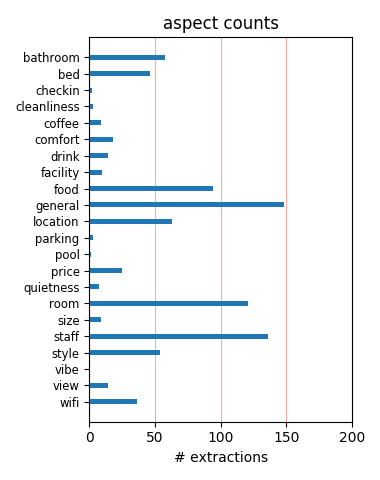
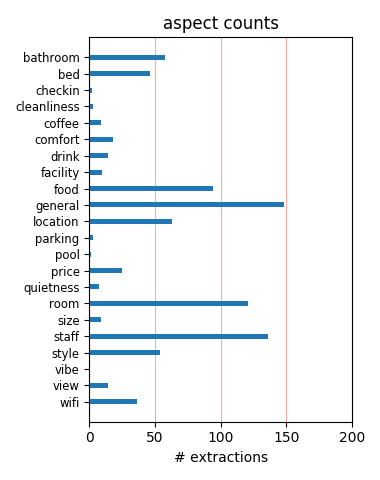

wow. great hotel, great location for business and fooling around. Large rooms, with huge windows. Well appointed and on a quiet street. A real find with only 30 rooms. Hopefully you won't have taken the last room when I come to stay.
This place is fantastic. This is our second stay here and we will definitely be back time and time again! A very small quaint place in the heart of Vieux (Old) Montreal. The staff here are courteous, friendly and extremely helpful. Highly recommended!
Spacious, comfortable, nicely designed, rooms. I stayed there with wife and three year old daughter, it was an excellent choice. Staff were very child friendly, and always very pleasant and helpful. The restaurant was excellent. Overall, great value for a luxury hotel.
I stayed here for the first time in March. The property was recommended by a friend and I was not disappointed. The staff was friendly and helpful. The room I had was spacious and bright. The bed was very comfortable. Overall I was very impressed and I will definitely be staying here again.
I am sitting in Room 520 as I write this review. We have a semi-private balcony. The room is very contemperary! But we have liked it for a change from the other hotels we've been to in Canada. The staff downstairs is very helpful. Continental breakfast is great. I would highly recomend this hotel.
We only stayed for one night but were impressed. The staff were very professional and helpful, making suggestions and booking a restaurant for dinner for us. Well equipped rooms, iPod/iPhone docking station useful. We had breakfast, which was very good. Loan of an iPad for internet access a nice touch.
Modern atmosphere with very nice staff. The room was pristine and had awesome exposed brick and a very large shower. Everything was perfect. If your going to be coming in late at night after drinking I suggest you buy some snack food for your room , there is no fast food/market/convenience store around.
Best service in Montreal, great attention to details. They really care about their customers and you will not be treated as a number but as a person. Very comfortable beds and the hotel style is very elegant with a touch of modernism. Olive et Gourmando just a minute away to enjoy one of the best breakfast in Montreal.
We hope the owner of the Hotel Gault appreciates his fantastic staff. They are truly the nicest people you will ever meet and competent to boot. Thank you Andre (I still hate myself for not listening to you, twice) and the rest of the lovely people at the beautiful Hotel Gault. We miss you and can't wait to come back. Steve and Lynn, Detroit
We having been staying at this hotel during the Montreal Grand Prix for the past 8 years and we can only say that every stay is exceptional. The outstanding service of Andre the hotel's conceirge is unequalled to any other hotel we have experienced. We look forward to many more years of excellent service from this world class boutique hotel.
We stayed at hotel Gault for three nights and were very impressed. The staff go out of there way to assist and nothing seems to be too much trouble for them. The room was spacious and modern and the building itself is beautiful. An excellent location, near many wonderful restaurants in the historic area of Montreal. I highly recommend hotel Gault.
Stayed at the Gault 2 nights this august during the Roger's Cup tennis tournament.If you like small hotels with great design,amenities & superb service,this is the place for you,not to mention the exquisite breakfast which is included + free internet.The hotel has class & the staff could not be any friendlier!An oasis of piece in the perfect location.
I will keep this short because everything I say about this hotel has been previously written. The rooms (and bathrooms) are enormous and comfortable. The place is the perfect size for a boutique hotel and in a great location. The food at the restaurant is amazing, tasty and so artistic. You really cannot find a better place to stay in Montreal for the price.
Very private and comfortable...the windows opened so we could keep stuff cold outside, it was March. Did have some noise from drunk passersby late at night. Other than that the brunch included was excellent. The room tastefully decorated in a contemporary setting and the furnishings very nice...lots of room to spread out into with plenty of space for personal stuff.
Since we live in Montreal, did not stay at the hotel but went there for the brunch on Sunday morning. The service was fast, friendly and professional. Delightful ambiance (loved the artwork, furnishings and Christmas derations) and excellent not-your-standard brunch foods (combination of ordering from menu and buffet). highly recommend for visitors and Montrealer's alike!
Hotel Gault was an absolutely stunning place to stay. The rooms were immaculately clean and simply stunning. The beds were just too comfortable as we did not want to get up the next morning. Instead of getting out of bed, we just called the front desk and stayed another day! lol. The entire Hotel was just exquisite and we hope to be able to spend some time there next summer. Great place!!!
We stayed here as a special treat and it was. It's very easy to find from the highway; the room was ready with a sweet bite and classical music; the staff inquired after us every time we left or arrived; it was extremely clean; I loved the robes. We walked from the hotel up to St. Denis and through Old Montreal in only about 5 m / 8 km. Some of Montreal's best dinner spots are within a 10 minute walk.
Superb room, breakfast (included), lobby lounge. Room was very quiet, well provisioned. Great dinner in restaurant at reasonable price. Wonderful service was icing on the cake!!! Not for budget travellers but good value for everyone else at $220 given breakfast and two drinks were included in the price. Breakfast usually $20 p.p. and includes a buffet as well as hot food from a menu. Highly recommended.
My husband and I stayed here for our honeymoon and it was beautiful. The hotel is modern and clean inside of a beautifully classic building in old Montreal. The service was amazing and we felt very welcome staying there. The only downside was that it was a bit pricey for us. They gave us a dessert plate in the first day that we thought was complimentary, but we were surprised when we were charged for it.
The Hotel Gault is very well situated in Old Montreal. Although this is a renovated historical building, the hotel is very modern and tasteful with very comfortable quiet rooms. The bathroom and bathtub in the room are huge. Upon arrival guests are welcomed with a beverage. The front desk staff are very helpful and knowledgeable about the area. We were very rested after a terrible first night at the Opus.
Thank you to all the staff at the Hotel Gault for all of the wonderful recommendations about what to do and see in the city. Upon my initial arrival, later in the evening, I was greeted by name and warmly welcomed. The room was very cool and modern and the location of the hotel cant be beat for access to everything. Everyone was so friendly and helpful at all times and the price of the room was very reasonable.
We arrived at the Hotel Gault at the tail end of our trip to Canada. The good service started at the door, and we were shown to our rooms even though we were early. The rooms are as advertised - minimalist and clean and spacious. We would have liked carpet throughout rather than concrete floor (chilly in bare feet!), but we liked the classical music playing, the DVD player, and the free internet. All very good.
One of the nicest hotels I've ever stayed in, and I've stayed in a lot. (I fly 120,000 miles a year). Beautifully designed. Super friendly staff. Great food. A "hip" hotel that makes you feel very welcome. Concierge, desk staff, etc. couldn't be nicer or more helpful. Older people may not think of it as "luxurious" - no overstuffed chairs, foo-foo decorations, etc. But if you like modern design, you can't beat it
This is the last time we will be staying at the Gault...time to move on. Carpets in rooms are dirty and need changing. Service is deteriorating. Bar service is minimal. No help with luggage. Hotel was never designed with comfort and travellers' need in mind. This was ok as long as the deco and service was outstanding, Now the hotel is just irritating. don't get me wrong, it's not a bad place....it just isn't what it used to be.
This hotel was amazing. Staff were so friendly and provided top notch recommendations for dinner and places to go. Very dog friendly. The only (bad) thing that happened was that our neighbour came hoe drunk-in heels and walk around her unit for about an hour.(?) The floors are concrete so we could hear here walking all around for that time. It was crystal clear to hear, so it woke us up. Other than that, the place was fantastic.
We loved this hotel for it's stunning decor, which I'll call "soft modern", meaning clean+ hip+ warm without looking like it's trying too hard (or like an office - I'm looking at you, business hotels.) Even more, we loved the people - the staff is wonderful, welcoming and made us feel valued even though we were just there for one night. I'm eager to return to this great boutique hotel. We had a terrific experience at Hotel Gault!
I stayed at Hotel Gault Christmas Eve and Day with my mom, who was born on Christmas. It was a birthday trip and the staff at Hotel Gault acted as though there is nothing they'd rather do than accommodate us on Christmas Eve and Day. Brian, Philip and Relita, among others were kind and helpful. The food was delicious; the room comfortable and spacious; and the location was fantastic. We walked to Notre Dame Basilica. Good water pressure and internet access.
the service was wexcellent - professional hotel people who tired to serve the guest - from the first moment i came in after a lousy cab ride and the guy at the desk said - would you like to sit and relax and have a cafe while we get your room ready - everybody there had the same attitude. and then the physical feature - although ultra moderne and i was a little bit nervous about that - it turns out that everything wasd provided and the comfort level was high.
Hotel Gault has beautiful rooms, a very nice breakfast spread, and is situated in an ideal location - what's not to love? Very little, I would say, but I do think you pay for it. If you can find a good bargain on the room rate, I would recommend staying there (especially because Montreal has more than its fare share of bland, tasteless generic hotel rooms) - but paying full price would seem like a rip off - it's certainly very nice, but certainly not worth the full-fare price tag.
Stayed 3 nights in an Etcetera room. Very nice large room with CD, DVD, wireless and LAN, flat screen TV, great bed. Bathroom was very nice with heated floors, seperate shower, and large bathtub. Service was excellent and staff were very helpful. Breakfast buffet had good choices. Overall an excellent luxury boutique hotel in a great old city location. Wouldn't hesitate to stay here again. Only minus is only 2 machines in the gym. That said, I never had to wait to use the treadmill...
The other trip advisor reviews do not lie. This is a real find. Everyone on the staff was so accomodating i every way. The room had minimal decor, but the amazing bed and comfy linens made up for it! nice shower and bathroom too. The breakfast was out of this world (don't miss the French toast or the croissants). The Gault Martinis at the bar were fantastic! Great location, we walked everywhere! I can't say enough good things about this hotel. Feel free to email me with other questions.
Okay folks, the Hotel Gault is a great hotel, but I don't understand this hype with all the "best luxury hotel". The hotel Nelligan, down the street has more amenities and their ambience is much more inline with the luxury theme-same price. I enjoyed staying at Gault and the price is right - $235/night. But I was disappointed by having no drawers to put my clothes in, and the amenities were very basic. If you can get the same price at Nelligan or Le Place de Armes, then we're talking luxury.
The staff was helpful and caring from the very beginning, not only professional, but friendly and careing in a relaxed way. What I liked best was the rooms: clever layout, beautyful laid back palette, great fabrics and flexible lighting options. It was raining through most of my stay and having such a nice place helped a lot in not feeling cheated out of a vacation weekend. I also recommend (as the staff did) the Bocata restaurant, Olives et gourmandeaux and Le Cartet, all in walking distance.
We do not usually use this kind of hotel but were seduced by the comments of others on TA. Though the overall experience was good there were little irritations that could be addressed : chipped paint in the bathroom, dodgy curtain fixings, no in-room coffee making facility, the only full length mirror being in the toilet(!), insufficient rails to hang towels. However, the location is first class and the staff very friendly and helpful. The rooms are huge if you stay on the top floor as we did.
Stayed for one night in Hotel Gault. Staff was friendly and very helpfull, helping us find points of interest and a restaurant. Really liked the room, a rather modern, cool but not cold interior. (Would have chosen another type of wood for the doors though, it didn't really fit with the style of the hotel interior) The room had an open plan, with a bathroom that was open and yet not too open to the bedroom. Comfortable bed, good shower. Location of the hotel is good as well, walking distance to the harbor and old town.
We stayed for 5 nights and found Hotel Gault to be a sublime retreat. This exceptional hotel is centrally located for walking and near many great shops and restaurants. The rooms are serene retreats, oversized with loft like open design, and excellent ammenities. There's a library, living room, bar, and restaurant in the lobby. Staff members made us feel welcome and were always available to assist. After finishing a meal in the restaurant one evening, the chef sent cookies to our table that he had baked at home that morning!
My niece and I stayed at the Hotel Gault this weekend and we enjoyed every moment in this lovely hotel! While our rooms were beautiful, clean and very comfortable - the best feature of the Hotel was the outstanding staff and management who ensured that we had everything that we needed throughout our visit. Hotel Gault is within walking distance of many galleries, fine restaurants, shopping and the Waterfront in Old Montreal. I highly recommend Hotel Gault and I will definitely stay there again the next time I visit Montreal.
We stayed at the Gault on a last minute trip for New Years. There were limited hotels available this close to new years, but the Gault was available and quite reasonably priced. We stayed in the standard room which is so much nicer and much, much larger than the pictures made it out to be. The service was wonderful, with great recommendations of places to eat and helped finding places that were open on new years day. Another plus was how much was included, bottled watter, wifi, etc., was all included. Fabulous cappuccinos as well.
The location was one the main reason to stay at the Gault Hotel. However, form the moment that I checked in to the moment that I checked out, I was totally impressed by the great quality of the hotel and the professional and friendly staffs. The rooms are very spacious and comfortable, with great TV equipment and perfect wifi. Either you stay for business or for pleasure, the hotel location is perfect. I will definitely like to come back but this time for pleasure in order to enjoy that great atmosphere that the Gault Hotel is offering.
My husband and I spent our wedding weekend at the Gault, and I would not have changed a thing. I had spoken with the concierge well in advance and asked for flowers be placed in the room before our arrival. When they brought us up to our room, they were there, and they were exactly what I had asked for. The staff were friendly, courteous, and always attentive to our needs. The room was spectacular, airy and beautifully furnished. The only oddity that I noticed was the towel hooks -- although perfectly functional -- needed to be re-anchored.
I stayed for two nights in mid-July '07 and had a great experience. The staff was fantastic. The room was uber-comfortable and really unique. It was quite modern, so if that's not your thing and you prefer an old wrought iron bed and antiques in the room, then look elsewhere. I was thrilled with my room... it was large, the high ceilings and long curtains behind the bed were dramatic, it had free internet access, and the bathroom was great. It was a tad further away from the center of old Montreal than some of the other boutique hotels, but no big deal.
I dont understand all these rave reviews. I stayed here last March and apart from being locked in the bathroom for fifteen minutes due to a faulty lock this hotel is very basic and totally overrated. The chairs in the rooms are like office chairs very uncomfortable and you could not watch tv from the bed as it didn't swivel. Staff were not overly concerned about my locked in problem and only offered minor compensation. Breakfasts and location are good thats about it. No one to help bring luggage in on arrival.I prefer the St James, as do the Rolling Stones!
We stayed four nights at the Hotel Gault. Impeccable friendly service with real insider knowledge. Very comfortable boutique hotel rooms, spotlessly clean, perfect bathrooms, free high speed WiFi access in the reception/lobby area. High end and tasty buffet breakfast available. Hotel Gault is perfectly situated in the western part of old Montreal. Five minute walk to Square Victoria metro station. Ten minute walk to centre of old Montreal. Fifteen minute walk to Rue St Catherine shopping district. Would heartily recommend this hotel and very happy to stay there again.
*Please note, this review is only of the bar/concierge/bartender service. The concierge is top-notch. We were wandering around Montreal looking for a warm bar with some atmosphere and the concierge from Hotel Gault spotted us. He walked us into his hotel and inquired about the rest of our night. With dinner reservations later in the night, he even printed us a map! What a considerate individual! If you stay here this is the kind of attention you can expect to receive. The female bartender also went above and beyond to make us feel comfortable. Many thanks to Hotel Gault
My wife and I visited Montreal from Boca Raton, Florida and weren't sure what our overall experience would be. From the minute we stepped into the Gault Hotel in Montreal,we were treated as if we were close friends. They took care of everything with that gracious Canadian hospitality and professionalism. The room was over 400 sq. ft and had a large bathroom. But, truly what made this hotel great was its staff. They couldn't have been more helpful and friendly. Do yourself a big favor. Skip the pretentious and overpriced hotels and come to the Hotel Gault. You will not be disappointed!!
Very, very well located on a quiet street within a couple blocks of Montreal's best restaurants (Borocco, Le Local, DNA, Olive+Gourmando, and Kitchen Gallerie Poisson). Our spacious room had a lovely terrace and sweeping views on both sides. Comfortable bed and pillows, big bathroom and sitting area. The staff could not have been more friendly and accommodating. Modern but not cold. My husband was on business and our teen daughter and I explored the city. Again well located for business travel (my husband could walk to some meetings) as well as exploring the old city. Highly recommended.
My husband and I visit the Hotel Gault every year. We have returned 4 years in a row. It is one of the most amazing properties I've ever visited. As time has passed, the hotel staff has not lost the attentiveness and attention to detail that makes it so special. The rooms are immaculately maintained, and the furnishings show little or no wear. The staff go out of their way to make a stay comfortable and memorable. The Gault is close to so much, yet it feels like a peaceful haven. Plus, they serve the most divine breakfast I think I have ever consumed outside of my own home. I cannot wait to return there again this year!
Just returned from a 3 night stay at the Hotel Gault. We obtained our research from this website and our efforts paid off. All the positive reviews of this hotel are on the mark. The hotel is in a convenient location in old Montreal, the rooms are large comfortable and clean and the staff were enormously gracious and helpful. The breakfast was exceptional as well. We have travelled throughout the world and have stayed at many wonderful hotels and this hotel is at the top of our list for price, comfort and service. We will definitely recommend to any of our friends who plan on visiting Montreal. Steve & Heather St. Catharines, Ontario, Canada
Stayed at Gault for weekend getaway with my husband. We frequent Old Montreal several times a year for vacation and business. Found Hotel Gault to be just okay . We booked a room to find that it only had a shower. Had to pay extra to upgrade to suite with tub. The suite was modern and very different . Balcony is big and private if you book the best suite otherwise you share your balcony. The curtains, made of organza were torn and the whole place had an office feel to it. Nothing warm or inviting. Breakfast was good and the coffee was hot. Overall I'd say there are better places to stay in Old Montreal and Hotel Gault is only so so in my books.
We did a lot of research on where to stay in Montreal and we could have stayed at a less expensive hotel chain. But, instead we discovered this wonderful hotel in Old Montreal which was a perfect location. This was just a weekend trip, but it was wonderful. The staff was very friendly and helpful about local attractions and restaurant recommendations. The hotel location was great and accessible walking distance to pretty much everywhere you wanted to go. Brian at front desk was very helpful too! We definitely will stay here again and plan to come visit very soon!. Yes, it can be pricey but you are getting what you pay for! Keep up to great work Hotel Gault!
What can I say? what a hotel, we loved the place. Service, the best we've had in a hotel; Breakfast was a fantastic selection of hot/cold plates; room was massive with all one would require in it; bathroom, likewise. Located in the Old Port area, easy to get to many attractions and lots of restaurants etc. But what makes a place is it's staff, and they were all superbé. When I needed to use a computer and did not have one (on my honeymoon) they supplied a laptop to us for free for as long as we needed it and they have a great wi-fi connection in the lobby. A great hotel in a great city, we chose it because of the reviews in Tripadvisors. We'll be back......
Just returned from four nights at the Gault. While the staff, breakfast and location were great, housekeeping was a disaster. We checked in to find clipped toenails on the floor and hairs in the shower. Despite requests with the front desk to have our room serviced late morning/early afternoon, housekeeping would show up at 5 PM daily, a time when we, and most guests, were resting up and showering before going out for the evening. Used glasses were never replaced, an empty tissue box not replaced, sheets on the bed not changed unless requested. paint peeling from the shower ceiling. This was in a $400/night suite. I would expect better at a Motel 6. Never again!!!!!!!!!
I met up with a group of friends for a long weekend in Montreal. We all stayed at the Gault. The staff was wonderful, Andre, the concierge, gave us great recommendations for restaurants and sights to visit. We were always greeted with a smile when we stepped in the front door, or off the elevator, and their only answer to a question was "yes". As others have said, the beds are very comfortable and the decor and furnishings are warm modern. The hotel is beginning to show a bit of wear, scraped elevator and room doors, a patch of paint missing by our soaking tub, and scuff marks on the room floor. Not a complaint, just an observation. I would not hesitate to stay at the Gault again.
This serene little gem on the edge of Montreal's Old Town is perfect. Not only is it very stylish and cool, the staff is amazingly friendly. No "cool attitude" ... Just genuine kind staff that want your stay to be just how you want it to be. Though the decor is minimalist and hard edge in a way, it is one of the warmest, most pleasant hotels I've ever stayed in.... Sleek, chic, spare but very comfortable rooms, beautiful Porhault linens, perfect lighting.... As a former travel editor for a national magazine, and having traveled the world, this hotel is outstanding. And it's perfectly located. Easy to drive to, right near the metro and on the edge of Old Montreal but not in the busy thick of it.
My husband and I stayed in the "Etcetera" room at Hotel Gault last weekend and we absolutely loved it! It wasn't like staying at a hotel at all; it was like staying in your very own stylish modern loft-style condo. The huge bath was an impressive touch. There was lots of closet space and just lots of space overall; the room was huge. The staff were also very friendly. We went down to the lobby bar for a few drinks at happy hour and the martinis were very good. I had "The Gault" martini and my husband had a very subtle margarita. Breakfast the next morning was complimentary and very good; high quality, fresh and de'lish! Hotel Gault far exceeded our expectations and we will definitely go back soon.
Everything about the hotel was great! We booked a loft suite, which was a good size, very clean with neat furniture. The bathroom was incredible, especially liked the big bathtub and heated floors. Service was excellent - nothing like leaving your car at the front door and not being bothered with ticket stubs to keep track of. When we needed the car, we just called the front desk and asked for it - no problems at all. The breakfast which was included was fantastic - eggs benedict, crepes, whatever you want! The lobby bar was cozy and friendly with wireless internet if you bring your laptop. We booked this hotel based on tripadvisor reviews and were not disappointed at all. Stay here, you won't be sorry!
We got the first of several pleasant surprises at check-in, when we learned that we had been upgraded to a suite (complete with wraparound terrace) with no increase in rate. We loved everything (well, almost everything) about the Hotel Gault: the clever, open-plan design in our suite; the magnificent breakfasts; the luxurious deep bathtub; and most of all, the friendly, helpful, professional staff (special mention to Caroline, customer service superstar). The hotel is extraordinarily well located in the historic district but also on the edge of downtown Montreal. Only minor peeve: although there is excellent wi-fi service in the lobby, we had problems with the high-speed internet connection in our room.
I found this hotel from a magazine article and was a bit concerned about a cold ambiance. We we're looking for a quiet 2 day getaway and we could not have been more pleasantly surprised. After driving through a blizzard, the staff at the Gault made us feel completely welcomed and relaxed. The room was dead quiet , the bed luxurious, the bathroom with tub had a great modern design. Our breakfast was prepared very well including great coffee. We felt as if we had a personal staff-Remi, Rausta and Benoit made our stay delightful, despite a foot of snow. There are some very interesting shops near the Nortre Dame Cathedral just a few blocks away. For an off season Montreal adventure- the Hotel Gault was a great discovery.
My wife, baby, and I stayed at the Hotel Gault this past weekend. We travel frequently and try to book at well-recommended hotels, but despite the positive reviews the Hotel Gault gets here, it is still under-appreciated. From the moment we arrived, Alex/Alejandro attended to us perfectly, offering to heat our baby's milk, suggesting a wine to unwind with, and touring our post-modern room with us. The room was well-appointed and despite having bare walls and a concrete floor, did not feel barren. Au contraire, it felt warm and inviting and we debated pushing off the next step of our trip to stay longer. Top marks. This is up there with other memorable stays at similar properties, like the Hotel & Villa Auersperg in Salzberg.
Design meets comfort. Staff makes you feel like you're home. They are truly the best. The hotel doesn't really have a restaurant; they have a kitchen. A kitchen that makes fabulous tasty food 24/7, wonderful breakfasts, a nice little bar downstairs. Just what you need to be comfortable, nothing you don't. The rooms are clean, modern well-equipped, but so, so comfortable. I travel here for business (have tried the Vogue, Le Germain, St. Paul but have come back here now for two years) but I would definitely bring my spouse back here for a weekend getaway. Only drawback is you have to walk a little for restaurants/stores, but not far and it's a neat old neighborhood, and of course the staff is always willing to give you a good steer. Le Gault, c'est magnifique!!
We loved our stay at the Hotel Gault. We stayed in one of the corner rooms which was spacious. The bed was sooooo comfortable and the large windows let in a lot of natural light. The only downside is that the hotel is very minimal and there were no extras in the room like tea/coffee making. The breakfast buffet which was included in the rate was ok but no hot food and some of the choices were a bit odd for breakfast. I asked for scrambled eggs and bacon and when it came it was inedible and when challenged he only replaced the scrambled eggs and the bacon was then cold! I then found out that I had to pay 14 CAN $ for this breakfast! However, overall this is a fantastic hotel, the staff were very friendly and helpful. It is also in a marvellous location for sightseeing.
Good: I have stayed at Hotel Gault half a dozen times over the past three years. It is consistently excellent: fair prices (especially if booked in advance), fantastic non-smoking public spaces (great breakfast buffet) and cool, comfortable rooms. There is free WiFi throughout the hotel, and the location on the slightly gritty edge of the old city (Vieux Port) is fantastic. Bad: Front desk service is always good -- but sometimes it is only just good. (For instance, I am never recognized as a repeat visitor, and the staff can sometimes be a bit cold -- but not always; sometimes they are fine). The rooms are air-heated, which can lead to dryness. Not all rooms have tubs -- though the showers are terrific. Most rooms have single wash basins for those who have grown accustomed
I stayed two nights in one of the loft rooms on the top floor. I had high expectations resulting largely from the enthusiasm of trip advisor reports. As a functional hotel, it worked reasonably well. The style was modern, no fuss and reasonable quality. The reception/concierge people were helpful. The location is good - on the fringe of the old town. It wasentirely satisfactory but not in nay way exciting. The ground floor area is perfectly functional but somewhat soulless. The room was much larger than I needed (or wanted) and again rather cold: concrete floor with rugs. There were minor niggles such as the breakfast arae being too small for the number of guests and the relative inefficiency of the staff. Would I stay there again - yes if I couldn't do better. But I'm reasonably confident I will do better.
I stayed at the Gault with my boyfriend for two nights at the end of december 2006. It is by far the best hotel I have visited - point of comparison are the Place d'Armes in Montreal, the Germain in Toronto and the Dominion 1912 in Quebec city. The design is absolutely outstanding. The room was very big. The FLOU bed was extremely comfortable and so were the duvet and pillows. The heated floor in the bathroom was well apreciated. The DVD player in the room was useful to watch our dvds - check out the dvd selection in the lobby - and so was the internet connection in the room. The complimentary breakfast was a nice surprise as you could order great hot breakfast from the kitchen and not just a continental breakfast. The staff was courteous and discreet. Overall a charming and romantic experience. I highly recomend it.
We read tremendous things about this hotel on TA and it did not disappoint. We were greeted by exceptional service from the minute we pulled up. Andre went above the call of duty to recommend restaurants in the area, and was simply a very nice man to be around. I wish more hotels had people this genuinely friendly. The rooms were minimalist and modern as advertised. I stay in big brand hotels all week for work, and I can't imagine how you could prefer that option to this one. Finally, the location is outstanding. We walked throughout Old Montreal and stumbled into unique restaurants and shops close by and had no need for a car in this area. We noticed several other boutique hotels close by, all of which looked very nice. I'm sure Hotel Gault is among the finest. Look for their prepaid rates, we enjoyed a huge bargain!
We stayed at the Gault from 4/28 to 4/30 and absolutely loved every minute of it. All the previous post have been right on. The hotel is just beautiful on the outside and so modern on the inside. The hotel staff were so wonderful and extremely friendly, really made you feel welcomed. Our room was so clean and roomy. The bed was so comfy; one of the best hotel beds I ever slept in. Loved the heated floors in the bathroom and the shower, wow! The continental breakfast was an absolute delight, especially the waffles. It was so nice sitting in the dining area having breakfast overlooking the streets of old Montreal, just lovely. The location is convenient to the metro, just a short walk. We just loved walking in old Montreal, so romantic. We would definitely stay here again, it really made our vacation special. I highly recommend the Gault.
We loved our stay at the Gault. Everything, from the staff to the clean and smartly decorated room with a great bed, was everything we could have hoped for. Before we booked, when I was reading other reviews, I was concerned by the references to starkness. Instead of stark, I would say they are very smartly outfitted and the space optimization gives you a lot of room to spread out in. Staying at Hotel Gault is the first time I have ever raved about the organization of a sink, shower and dressing area. They have a small but efficient gym, including a treadmill, elliptical, weight rack, and exercise ball. We also used the lounge area for cocktails and the library for afternoon coffees. Everything was very clean, in great condition and comfortable. The staff is indeed as marvelous as all the other reviewers claim. We will definitely be returning to Hotel Gault!
Really a great hotel. Rooms are comfortable and huge. Love the bed and huge tub. Daily breakfast was great- leisure,great offerings and could read numerous papers or watch ET or Nemo on the flat screen tv. Staff is very nice and the location is great for strolling around,shopping or getting a bite to eat. Only thing I thought was strange when I was there was the entrance and lack of staff helping you get your bags up the stairs or holding the door open- not a big deal for a smaller hotel but something I noticed. The streets can be a bit noisy as there was lots of contruction going on when I was there and the heated cement floors will pop and crack quite loudly after turning them up or off. Most people I am sure would not notice this- as I am a light sleeper. They did a really nice job with everything. Restaurant called AREA around the way is absolutely excellent!
The service from the staff at this hotel is - OUTSTANDING! I repeat OUTSTANDING!. There are too many things that the staff were willing to do to mention. I remember though when we arrived made us a cup of tea before we went up to our room - went out of their way to help with numerous enquiries we had - when the taxi came on the day of departure came rushing out and said we can't let you go without us saying goodbye to you properly and proceeded to give a hug/shaking hands. The hotel is a boutique size hotel in Old Montreal. The outside of the building is old but inside new. The hotel is handy to everything. The hotel is quiet. The hotel is out of this world and worth a visit to Montreal just to take in the experience of this hotel. We have stayed in a lot of hotels around the world and never had an experience like Hotel Gault Montreal. Congratulations to you all, you are one of a kind. Jos/Keith..
Just to second a lot of the other reviews on TripAdvisor, we had two great experiences at Hotel Gault. We have made two long weekend trips to Montreal and found Hotel Gault to be perfect for us for both stays. The location, size of the hotel (small), service, and design were all fabulous! Location is right in the heart of Old Montreal and near a subway station. Service is always wonderful (consierge spent considerable amount of time helping us find restaurants, make reservations and printing out maps for us). My husband loves modern design and was loving Hotel Gault with the polished cement flooring and other such touches. Breakfast is included in the stay and is above and beyond my expecations for a free breakfast (made to order eggs benedict, lox, omlet, etc.) So good that we ate there every morning before heading out for the day. Needless to say, as we already have been there twice, we'd return again a third time.
I recently stayed here on a business trip because I couldn't get into the hotel where my conference was at, and it was a very pleasant surprise. It's an excellent location on the edge of the old city, and the staff was exceptionally nice - very friendly and very helpful. In terms of style, the hotel decor is very modern. I had a loft room and it had concrete floors, wood furniture and a seriously comfortable bed. I also came back to find complimentary cookies in my room the first night, which were excellent. I would recommend this hotel to anyone traveling alone, as a couple or with friends for leisure trip. The only negative about the stay was that there wasn't really a work station, and the wireless Internet connection seemed to be spotty. Not an issue for the general business traveler, I think, but for someone who needs to set up an office in their room and do a lot of work it may be a problem depending on what room you are in.
I found out about the Gault via Wallpaper magazine Montreal guide. As usual, they were right. The hotel is perfectly located 2 minutes walk from St. Paul street, in the old city area. The hotel is a design/boutique style but not over the top, meaning you feel at home there. The lobby is cozy, with the fireplace, newspapers and sofa seating areas, the room I stayed in (520) is absolutely wonderful, with a private terrace, 2 windows/terrace door that go all the way to the ceiling, wood, Artemide lamps, heated floor in the toilet. The best you can have in an hotel, for my taste. I was undecided between the Gault and the W hotel, really glad I chose the Gault, the W is in Square Victoria (the Gault is at a nice 2 small street's corner) which is now full of tents with the "occupy"/"indignee" people of Montreal. The Gault, to be repeated (they even bring you 100CAD change to your car, looking for me on the street to satisfy my request...enough said!)
As all the reviews say, the staff here are terrific. The warm welcome, the concierge service to the room, the friendliness of everyone - all wonderful and very much appreciated. I came for one night only on business, with the goal of determining whether we would send our clients to the Gault, instead of the Intercontinental. I would describe the hotel as modern, not historic, all open concept bedroom/bathroom, very white/bare furnishings. The bed was fantastic. The room service was quick but the food was a bit mediocre. I didn't eat breakfast but the menu looked great. I haven't decided if this is the right hotel for our clients yet (no real 'historic' feeling to it) but I may try it again. What I do like is the free wireless and the 24-hour room service. I can't tolerate paying for wireless at hotels anymore; it's archaic. I totally give the Gault full marks for personalized, friendly service - something the Intercontinental can't come close to.
Just finished a long weekend at the Hotel Gault. Most all of the reviews read were fairly accurate. The hotel is minimal on amenities, but provides outstanding service. The only criticism i would have is that I think the rooms would be better suited with carpet rather then the bare concrete. While I think I get the look they wanted, I didn't care for the concrete floors. The hallways were carpeted and I would have kept that throughout the rooms as well. As far as the service, I couldn't give them more praise. Everyone, and I mean everyone, on the staff were sincerely interested in being as helpful as they could be. The staff made our Montreal stay extremely pleasant with their intimate knowledge and advice on Montreal. I will give extra praise on their exceptional service to Alejandro, Andre, Andra and Elodie. Montreal is a great city to visit. The Hotel Gault is an initmate boutique hotel located in Vieux Montreal, clean, comfortable and with an amazing staff.
I took a loft room, which, according to the floor plan was small compared to the other rooms on the top floor. However the room was very well designed, spacious and cleverly laid out - I very much appreciated the counter and stools in the seating area and the spacious balcony. There had obviously been a second set of curtains that had been removed from the room - leaving the curtain rails and a set of naked hooks - a rather tacky omission in what was otherwise an impeccable decor. The problem with minimalism in hotel design is that the slightest visual glitch is evident... Overall the hotel is very thoughtfully designed - and I enjoyed the artful simplicity, style and comfort of the whole place. STaff members were exceptionally warm, knowledgable and competent. The only downer is arrival. I was very unhappy about having to schlepp my luggage up the steep front steps, after a long journey - and without any help. This rather marrs the arrival and check in, which was otherwise excellent.
Gault hotel is at the heart of Montreal and its location could not be better. The rooms are huge and some details in the design are just amazing and the food was more than decent. Yet , I have to admit one of my most vivid memories of the hotel are the stained, one with one of those big brown stains and the oter one had pubic hair which obviously weren't mine. I can't believe there is so much attention given to details, yet I obviously got stained towels that should have been clean, since it was nicely folded on the side of the shower. I just was not able to figure out how someone could have miss that, and to be honest, I was disgusted enough just not to ask for replacement towels, preferring to find more hygienic ways to get dry. I've traveled a lot and I'm not a very hard client to satisfy. My only need is just a minimal this is just the kind of things I can't get over. This is just the kind of things I can't get over and although my overall stay has been pleasant, I would never recommend this hotel.
I have been meaning to write this review since my husband and I returned from our 3 night stay in July. I picked this hotel based on Trip Advisor, and you can add us to the chorus of highly satisfied guests! We are very fussy about hotels and few meet our admittedly sometimes unrealistic expectations. The staff could not have been more friendly and helpful. If you even opened a map while standing in the lobby, someone would ask if they could be of assistance. The people working at the hotel genuinely seem to enjoy their work, and it was a pleasure to return there at the end of a long day of sightseeing! The rooms are huge and immaculate. As many have said, they are very modern in furnishing, so don't be surprised by the loft-like feeling. We loved the room so much we wished our apartment looked like our room! Also, the food (breakfast and lunch) was delicious and not at all overpriced, unlike many hotels. Location can't be beat -- close to everything but still out of the main tourist strip. We loved Hotel Gault and can't wait to return!
words (or photos as well, actually) cannot possibly do the gault justice. i took my boyfriend there for a long weekend to celebrate his birthday..had read as much as possible about the gault online previous to booking. i assumed that after three months of planning, the hype had almost certainly risen to a level that no hotel could possibly live upto. delighted to say, i was dead wrong. a few highlights: the most comfortable bed i have ever slept in, breathtaking archetecture, a terrace view of montreal, breakfast fit for royalty, and above all, andre..sorry to namedrop andre, no pressure. :) if an afternoon passed when we didnt see him, both of us were disappointed..we even abandonded breakfast in our heavenly bed for breakfast downstairs in hopes of having a chat with him (breakfast downstairs was lovely as well, of course). no compliments will do..you simply must meet him (and the gault) for yourself. i will never even consider staying at another hotel in montreal, ever again. in fact, id like to try a different room every time i happen by. absolutely fantastic.
You may not like contemporary design (I do, and it's one more reason I love this hotel). But, even if you don't, the level of service here is simply amazing and should make even the most modern-design skeptic a lover of this hotel. My wife and I stayed in a suite with a private balcony: a suite that easily eclipsed the size of our manhattan apartment! All amenities you could ask for: a well conceived design from top to bottom: heated bathroom floors, huge windows, generous storage to hang suits, unpack, and really high quality linens. Notwithstanding how much I like the decor of the hotel, the staff and the professional level of service they provide are the main attraction in my opinion. Simply put: they are helpful and dedicated to making your stay comfortable and pleasant. We arrived very late but the hotel staff were there to park the car and bring our luggage to our room. I'm originally from Montreal and have seen a lot of the city's hotels when I've come back to visit. This hotel really exceeded my experiences with other hotels. My wife and I are sure to return.
I stayed at Hotel Gault in November and I have nothing but good things to say. Firstly, we arrived rather late and check in was quick and welcoming. We were introduced to the friendly and courteous hotel staff and were told a few things about the hotel. I asked for recommendations for the following evening for dinner, as BYOW is something that lacks in Toronto. In the morning I was given 5 different options detailing locations, their personal reviews, crowd, and varying cuisines yet all pertaining to my requests! Excellent. My room was quiet, relaxing, and more than inviting. I had a great night sleep and was up and ready to go after my free in room breakfast. A full a lá carte menu is included with free room service which was more than an added bonus as Montréal can leave you paralyzed the morning after. The only thing I can say is that an LCD monitor would have been a nice added bonus, but nonetheless, the only issue I had. No matter the request, Hotel Gault went out there way for me - my friends and I agreed that we are pleased to have somewhere to stay when in Montreal.
After having read all the wonderful reviews, I was expecting my stay at the Gault to be the "summit" of a two-week Canada trip. However, I was rather disappointed, both by certain aspects of the room and by the service. This has been the only time that I have disagreed so significantly with the Tripadvisor rating. Room problems: several lights didn't work, the safe was broken, the toilet seat was about to break & there were no clothes hangers at all (strange for a luxury hotel!) Service problems: the people at reception and at breakfast were very friendly. BUT, I was not so thrilled with the overbearing attentions of the concierge André: for many travelers, advice on restaurants and extended anecdotes on the city may be welcome, but that advice shouldn't be forced on (more independent-minded) travelers who know the city. At one point, I resorted to running away when he approached me for the umpteenth time. At the end of our Canada trip, I found that both the Germain in Toronto and the Auberge St Antoine in Québec City were superior hotels (with regard to service & accommodation).
This boutique hotel, close to the Old Montreal and Downtown, is really superb. We arrived at 1 am to find a very nice front desk clerk, who took us to our room quickly, which was really appreciated because of the late hour. The room was large, nicely decorated, and well appointed. The bed was very comfortable, and the bathroom was huge, with a shower, and a tub. Everybody we encountered was really nice, and eager to please. The hotel is walking distance to everything there is to see in Montreal, the Old city and the modern downtown area, however on a quiet street. The metro station is just a few blocks away, but finding a taxi was no problem at all. Yes, there is a Five Guys just one block away, but why would you eat there, having an excellent restaurant on site, and so many good restaurants just a few blocks away. We did not use the spa services, however I'm sure they are as great as everything else in the hotel. Thank you all at Hotel Gault, I can't remember all of your names, however you made our first (and not last) visit to Montreal unforgettable... we will be back... in the Summer =)
We stayed at the Gault at the end of June and while we had a pleasant experience, something seemed to be lacking, a certain attention to detail. Sometimes we did not receive the turndown service, for example. Also, the rooms have a lot of bare concrete floor which is not pleasing to bare feet (cold and sort of scuffed up and dirty looking). I thought this would not be annoying since the Gault website indicates that slippers are provided, but alas, there were none to be had. We received an excellent restaurant recommendation from the staff, but also got some misinformation as well. So, I would have to agree with the previous poster that attention to some of the service-related details seems a bit off. The general "vibe" of the hotel is rather young (20-30 somethings, guests and staff alike), so I think that what was also lacking for me was a feeling of being a bit out of place. As I look at the reviews here on TA, it seems like the younger crowd really takes to the hotel while some of those older are more lukewarm..... We had dinner at the Nelligan one night and felt more at home there as forty-somethings.
What a terrific hotel! We stayed for three nights, and were not disappointed. As mentioned in other reviews, the staff is exceptionally friendly and helpful (and young!), with great dinner and shopping suggestions tailored to what we were interested in. The hotel is clean and modern, but still feels comfortable and romantic. Although the hotel was completely booked the weekend we stayed, it never seemed crowded or busy; a feeling of relaxed (but hip!) elegance was maintained at all time. We stayed in an "Essential" room, which is the least expensive, but the room was plenty big. No dressers, though, so prepare to keep your clothes on shelving. The shower was wonderful, big with great pressure. The breakfast is amazing: plentiful and delicious, with hot items cooked to order. The hotel is located in a quiet part of Old Montreal. It is a mostly business district so on the weekends it is very peaceful and private, yet the bustle of the more touristy section of Old Montreal (which we pretty much avoided) is only a few blocks away, as is the nearest Metro station. All in all, a fabulous time. We would definitely stay there again.
This hotel is in the same category as W Montreal & Hotel Nelligan. Both very modern, sleeck, upscale, and hip. The room is very bare with the essentials. They seem not to provide enough clean towels, wash towels, and etc. I had to ask for more. The water, chips, and chocolates in the room were unmarked with prices. So I didn't know if they were complimentary or not.... hence I didn't touch them. You can hear noices from upstairs and next door very easily. All rooms seems to have very high ceilings. All with views of the surrounding buildings. The hotel is only 5 stories high, so don't expect any spectacular views of anything. The breakfast was good, which was complimentary and included waffles and order of eggs if you wanted. All the staffs were friendly and helpful. The beds were extremely confortable. The room was clean and modern. At the summer promotional rate of $249, its hard to go wrong at this hotel. But I believe rates are usually around $400, which I think may be a bit too expensive when comparing to the W Hotel. Not sure if it justifies that price rate... its no four seasons and definitely does not have all the amenties to justify that price.
We usually stayed at the Fairmont QE in Montreal, but on account of the great reviews that this hotel has received, we decided to give it a try. And we got a good deal with their tasty promo. Had the extraessential (?) room that is a corner room with lots of space. Everyone we dealt with was super friendly and courteous. Received turndown both nights. No problem there. Room was made up by housekeeping while we were out. Did a good job cleaning. Had dinner at the hotel restaurant (came with room). Wonderful food and good service. Breakfast both days. Good selection, and included eggs or crepes made to order. Location is good. Two blocks at most from subway entrance, which connects to underground world in Montreal. Very convenient (especially when it rained the way it did when we were there). On a quiet street, but right next to busy places like St. Paul Street with all the bars and stuff. So room and street noise was a non-issue. Room only one phone. Very surprised. And not cordless. No coffeemaker in room. I really don't like that. Otherwise, everything was great. Agreed with previous poster that bare floors seemed strange. But it wasn't bad. And the bathroom floor was heated. We will definitely stay here again. I am VERY surprised but I like this more than I do the QE.
My wife and I stayed here for a couple of nights in September. The first thing I am going to comment on is the staff. As other reviews have stated they really are an asset to this hotel, exceptionally friendly and helpful without being overbearing. Next the room. We were on a second floor room which was really spacious and minimalist in design. The bed was really comfortable and had quality sheets on it. The floor was getting a bit scuffed and marked but that was the only negative thing I would say about it. Location wise it took us about 15 minutes to walk to it from the train station. It is about 5 minutes from a metro line. There are plenty of restaurants around it as it is just on the edge of the old town. We hadn't realised that breakfast was included in the price we paid so that was a nice surprise. It was just a simple continental style buffet but was more than adequate (the juice jugs could have done with some sort of label so you knew what you were getting before you poured) All in all we would certainly return if we ever go back to quebec. One final thing to note is that the "city view" that was listed when we booked wasn't as expected. I expect a city view to be of a skyline, whereas in this case I think it just meant on to a street rather than an internal view
After reading the reviews of many Montreal hotels we plumped for this one... At first sight I wondered where all the people were, as it was supposed to be downtown Montreal in the heart of the old town. It is near (approx 10 mins walk) but not so near that you can hear the crowds passing your window. The room was massive, we reserved a Junior suite after some problems with the initial payment (this was our problem) and as you can see in the photos both the room and bathroom are considerably spacious. Both bathroom and bedroom furniture were extremely clean. Some days the floor could have been swept and cleaned - but that didn't detract from the overall splendour of the hotel, which was refurbished on the site of the first North American YMCA. The only thing missing from my point of view was a small sofa, as there was one easy chair in the room and to relax the only other option was to sit on the bed. The staff couldn't have been more attentive to our needs. We needed some adjustments to the air conditioning and we also booked a car through the hotel and Alejandro, Andre and Bettina more than helped us out. We were even given a specific route through lovely rural villages when we drove up to Quebec city which was prepared and written by Andre. So if you want to be pampered and looked after try the Gault in Montreal.
My husband and I have stayed at the Hotel Gault on a number of occasions - both for leisure and business. It is, by far, the best hotel experience I have ever had for multiple reasons. First, the hotel is located in the Old Port of Montreal amongst interesting shops, restaurants and historical sites but is also only a 10 minute walk from a major shopping area of Montreal. Second, the rooms (and the hotel itself) are immaculate, modern chic with soaring windows, warm concrete floors, luxurious white bed linens (with a splash of colour), flat screen TVs and a funky, functional bathroom (my favorite is the room with the stand-alone bathtub!). The rooms are also the quietest I have ever experienced with no sounds from the other guestrooms. What has also always surprised me about the hotel is that while the rooms are spotless, I have never confronted the cleaning staff other than for the turn down service in the evening. They are unobtrusive and respectful. Finally, while all of this makes the hotel a great experience, the real jewel in the crown of the hotel is Brian, the Manager of Lodging and the amazing staff. They are, and have been on every occasion, the consumate professionals, kind, helpful and engaging. Because of Brain and the hotel staff our experiences at the Hotel Gault have left us relaxed, happy and looking forward to our next visit. I cannot reccommend this hotel enough.
I have to say that the service at the hotel was very good. The people are friendly and definitely helpful in every way. I recommend the breakfast there. You really can not go wrong with your choice of meals. The hotel has a cute library area in case you want to just sit and read for a bit before you head out to explore the city. It is in walking distance of the Basilica de Notre Dame and other must see sites during the day. At night there is a club to the north a block away so you are covered at all times. Now the one negative that put a damper on my stay. It seems on each floor they have a room that faces the parking lot in the back. And we just happened to get that room. We assume that it was because we used JetSetter and received a great rate for the weekend. This puts a negative on both JetSetter and Hotel Gault. And another reason to back up this theory is that when the hotel help took us to our room, they tried to show explain to us where everything in the room was, like the closet and hangers and restroom, but they werent familiar with the room and took time trying to figure things out and even said... wow i wonder why they made this room this way... So overall the hotel is great.. just make sure that you do not get the room in the corner which is located all the way to the right coming out of the elevator or you will spend your entire vacation with a view of the parking lot behind the building.
We just spent the better part of a week at the Hotel Gault in Montreal, celebrating our 20th wedding anniversary, and our postive experiences at this hotel, and in Old Montreal, have left us with such a memorable and joyful celebration. As in Paris, we always prefer a small boutique hotel, and with only 30 diverse rooms in the Hotel Gault, we became acquainted with the friendly, competent, courteous and professional staff, and in all of our interactions with them, we all shared a genuine personal touch to all of our activities. From the time we made our reservations by phone, and until we left by taxi to the airport, every staff member (chefs to attendants) made every encounter a pleasant experience. Our quiet "top 5" room was impecably cleaned each day, excellent toiletries; we were also provided with a hand-written weather report for the next day, along with bottled water on the nightstand. With the excellent location of the Hotel Gault, we leisurely walked, or took the metro everywhere (without fear or safety concerns), and appreciated the non-destructive humanity of the people of this fine city. The majority of our purchases consisted of items (art to clothing) that were creations of local artists, and we never felt cheated or deceived in our discussions and purchases. When we return to Montreal, we will also return to the Hotel Gault, and expect to again enjoy all the courtesies the enthusiastic staff provided to us.
The Gault is the real deal when it comes to service and cool. I spent 8 nights there for a long conference and every night spent in the Gault was a treat. They are THE NICEST staff I have ever encountered in any hotel in the world (and I have stayed in over 40 countries). Special kudos to the front desk for remembering our names every time we came in the door. Be careful what rooms you get. We were in the best rooms in the hotel, but some are small on the bottom floors. Splurge for the fourth or fifth floor rooms. The modern decor is way cool and very welcoming; very modern, but incredibly comfortable. The only nit I would pick is the ridiculous chairs for the dining area. They nearly killed three people while I was there so watch out for tripping. The rate includes breakfast and all the various coffee drinks you can consume. Remember to order off the menu for breakfast. If you like your eggs 'American' standard, ask for your omelette well done, otherwise they are a bit wet (keep in mind a breakfast like this would set you back at least $25 CAD elsewhere.) Use your tub if you get one, it's way cool after a busy day of shopping. Go shopping on Ste Catherine street, especially in the higher end shops. There are some real treasures. The Gault is one of the finest hotels I have stayed in, bar none. Not a grand hotel in that tradition, but warm, welcoming people make it the experience you should not miss in Montreal. Magnifique!
I recently spent 3 nights at Hotel Gault, Montreal. I was extremely impressed with the hotel and felt that it was superior to all the other Tripadvisor hotels I stayed at during my Trip to Las Vegas, Montreal, Quebec and Mont Tremblant, including the Four Seasons/Westin/etc. All the other ones were great, but Hotel Gault has got something SPECIAL....a sense for incredible design and decor. In fact, besides the Four Seasons Maui, it might have been the best hotel I ever stayed at. PROs: - The interior design of Hotel Gault is world class. The chairs, the beds, the tables, the showers - it is all very practical, but also very beautiful. - The loft style rooms are simply gorgeous, with high ceilings and beds that make you want to spend all day in bed. Extremely comfortable. - No room is the same, so you'll get a bit of a different experience every time you're at the hotel - The front desk's employees and the concierges are extremely knowledgeable and very friendly - Internet and breakfast is FREE - The location is in a quiet street in Old Town Montreal. Simply perfect. CONs: - This is hard....the only thing I can think of is that it takes from 7.30am to 7.30pm to get clothes dry-cleaned, unless you want to pay $35 extra. And if you require a bath tub instead of a shower, make sure you make your reservation by phone, most rooms only have a shower. When staying in Montreal, this is THE place to be. You don't have to trust me, but you can trust Bill Clinton, he always stays there when he's in town.
This is my 2nd stay with this hotel. I actually flew up several years ago when the hotel first opened and I had a great trip then. I flew to Montreal for business and I knew that I wanted to stay at the Gault again. This stay was as good as the first trip. The first trip I booked a "Terra" room but this time I booked a "Top 5" room. I booked directly with the hotel from their website and they are very quick to confirm and all communications were great. The "Top 5 " room that I booked was spacious and it was on one of the top floors. It also had a nice outdoor patio/terrace that I could walk out onto for fresh air. The bed was very comfortable and it had a small TV with a DVD player. There was no wi-fi in the room but wi-fi worked from the lobby. The room had free high speed internet with a cable but it was a bit uncomfortable as the desk was a high bar area and the chair wasn't the most comfortable. The bathroom had a nice shower. The area is great in Old Montreal and the buildings are gorgeous in this area. In fact I found it interesting that outside the hotel it said the building housed the first meeting of the YMCA over 100 years ago. The area is great with several bars and cafes in the area. The hotel staff is very friendly and there is a bar area as well that gets lively at night. The room included free breakfast downstairs but both days I was busy so I never got to enjoy it. I spent 2 nights here and it was very comfortable. I highly recommend this hotel to anyone going to Montreal. It was as good as the first year I went.
All the positive TA reviews of Hotel Gault are 100% true! Our recent two-night stay at Hotel Gault was absolutely perfect: minimalist chic but with warmth and outstanding creature comfort! We loved the blend of the old and ornate architectural exterior with the more stark and loft design of the interior. The public spaces had both a rarefied and inviting openness about it with clever combinations of warm blond wood and tin ceiling and concrete walls, with wonderful displays of modernist art and whimsical but perfectly comfortable furniture. Our Extraessentiel room with its high ceiling was huge, and the bathroom with its separate tile & glass shower and its separate tub was also spacious --approaching the size of an entire hotel room in some cities! The bed and bed and bath linen were all plush and of excellent quality. The decor was minimalist and stylish, with use of warm colors. Service was exceedingly nice and attentive. The bountiful breakfast service with an abundant variety started at 6:30, with coffee and espresso made to order. The location in Old Montreal was charming with small restaurants and coffee shops nearby while being a little away from the heavier tourist traffic; it took us about 20 minutes on foot to get to Centre Ville for our work-related meeting, which made for a nice and enjoyable way for us to see the street and sidewalk culture of both sides of Montreal. I am afraid that now that Hotel Gault has just re-affirmed for us the meaning of "boutique", we will be obsessed with finding something similar to it whenever we travel!
I have actually stayed in this hotel 3 times over the past several years. I first went shortly after they opened. I have traveled all around the world on over 60 international trips in 3 years (all vacation). This hotel is head and shoulders above most hotels I have been to. It's ultra cool and has excellent amenities. More importantly, the staff is amazing and goes the extra mile. The last time I went I remember that I called down to ask if they could recommend any places that delivered food. They gave me some phone numbers. I asked about one of the restaurants and they didn't have a menu so they went down the street to go get one! Also, I had to mail some letters and didn't have stamps but offered to buy some stamps. Again, they didn't have any stamps there but offered to mail them for free. The room I stayed in was great. Once I stayed in a "Studio" and another I stayed in the "etcetera" and the other the "Terra". All were great. The breakfast buffet in the morning was really great. They were always very friendly about directions, parking and the service was head and shoulders better than most places. One night I had a date with a girl I met and I went to buy a bottle of champagne. Someone that came in for the turndown service noticed it and immediately offered to bring a bucket with ice and even brought champagne flutes up. I ended up leaving an expensive Prada belt in the room when I left and I expected it to be long gone. I called and they said that the cleaning lady found it. They immediately Fed-ex'ed it to my office the next day. I can't recommend this hotel enough. When I go back to Montreal I wouldn't stay anywhere else. mike@apartmentsba.com
We really loved our stay at the hotel. When we walked in, Andre was there to greet us with a warm smile. He knows his stuff and use his suggestions and expertise. The front staff was very warm and helpful, especially for small requests, spa suggestions, etc. The location was great although too bad it was cold (we're from the West Coast so we are not good with cold LOL!). The hotel lobby was amazing - I loved the art pieces. The room was clean, simple and modern. The heated tile floor was great in the bathroom. The bed was super comfy and overall a great view of Old Montreal from our Extraessential room. The one thing we both raved about was the breakfast that was included with our room price. It was DELICIOUS! I will never look at continental breakfast the same ever again! Great coffee, great selection, and loved the choice of a la carte. For the price we paid (we had a government rate, which is around the same as the promo rate), there was nothing substantial to complain about. We would come back again for sure and I loved Montreal so much. Our only suggestions were (although I was told that there were significant changes happenning in terms of renovations, new artwork, paint, tvs etc. in the next year - can't' wait!) a) flat screen lcd tv screens b) perhaps an ipod docking station? c) the shower needed a bit of a scrub and some washroom fixtures looked a little worn d) the floors were a little worn but nothing big e) the gym maybe a bit bigger? more equipment? not that people come to montreal to work out! f) the toiletries, i would have recommended something other than the spruce scent - i know scent is very particular and the brand they offered was excellent, i just thought it was very masculine Other than the above, thanks to all the amazing staff and what a wonderful beautiful hotel.
My wife and I just returned from an excellent weekend stay at Hotel Gault. The hotel itself was beautiful, very modern and clean. Our room was great (we had a Terra room) with a comfortable bed and huge bathroom with a large bathtub. Didn't spend much time in the room though, as we were fortunate to have great weather and we spent most of our weekend exploring the city. What really makes Hotel Gault stand out is the service. Everyone we encountered was friendly, enthusiastic, and happy to help. If you need anything at the Hotel Gault, Stephan is your man. He was able to get us a reservation at Au Pied de Cochon on relatively short notice, and the next day was able to get us a table at a great bar to watch the Canadiens-Bruins playoff game on even shorter notice. Also when we arrived at the hotel, he pointed out a parking spot available on the the street where we could leave our car for the weekend, which saved us from having to valet the car and pay for parking. That was huge. We did the Easter Brunch package and the buffet brunch was terrific as well. Great selection of pastries and a homemade jam that they should bottle and sell. They also had eggs, ham, baked beans, and crepes, the ham in particular was amazing. The staff (Dominic and another fellow, didn't get his name) was happy to make several cappucinos for my wife which she was raving about. Again, outstanding service from everyone. Didn't get any room service while we were there or try out the free popcorn and DVD rentals that Hotel Gault offers, however we did share an elevator with a very happy little girl who had a cartoon DVD and giant bowl of popcorn. Really can't think of any negatives about our visit, I don't think there were any. I'd recommend this hotel to anyone, I honestly can't ever remember staying somewhere with better service than Hotel Gault.
As is our annual tradition, to cap off a week of skiing in the Eastern Townships, we spent a weekend in Montreal. While we have really enjoyed the St. Sulpice in Old Montreal in previous years, we felt it was time for a change and selected the Gault based on TA reviews, amongst other recommendations. We thoroughly enjoyed our stay. The lobby/front desk/bar/lounge/restaurant is essentially one large high ceiling room with funky decor and generally attentive service. They were a little short-staffed on check-in, but once they turned attention to us, we felt well cared for and our car was whisked quickly away. The rooms are incredibly hip and comfortable, but probably not to everyone's taste. Notwithstanding the stripped-down decor, a large modern art print or photo or two on the walls would be a nice touch. The open-style bathroom was just fine, although the lighting was a little counter-intuitive, and lacking a few little details (e.g. there was no where to hang your towel or robe within easy reach of the shower). If you are inclined to unpack your suitcase, you may find the hanging space a little limited and the drawers more fun that functional. But aside from these quibbles, it was a fine room. (I don't recall the name, but we had the king bed room.) Breakfast is quite lovely, with some unusual elements (not the standard continental) and, at least on weekends, available quite late into the morning. When I asked for a tray to take breakfast to my room, it took a minute to find one, but they happily obliged. The front desk was helpful with confirming our dinner reservations, providing taxis or directions, etc. When we arrived back one evening after a glutonous meal at Le Pied au Couchon, desperately in need of a degustif, we were able to sign for drinks at the bar and walk with them up to our room (unheard of in Ontario!). All in all, a pleasure and we would happily stay again.
My partner and I stayed at the Hotel Gault for five nights (Thursday to Tuesday), and were immediately impressed with the hotel's sleek yet down-to-earth style. Our room, an "Essential", was more akin to a funky city apartment than a dull hotel room. The bed was incredibly comfortable, and there was very little noise at night. We greatly enjoyed the spacious shower, heated floors, and roomy drawers for storing our clothing. Even then bathrobes that were tucked away in a closet smelled divine. **My only recommendation for the room would be the addition of a tea kettle or coffee pot, as I really enjoy a late-night tea/cocoa/decaf break. :) I would also suggest that the temperature in the basement gym be reduced, as my partner and I were a bit overheated whilst working out.** I must say that the most exceptional aspect of our stay at the hotel was the amazingly friendly and accommodating staff. Our first encounter upon arriving was with Andre, the bubbly and energetic concierge. He not only parked our car and helped us with our many bags (namely, rucksacks!), but also recommended a fabulous restaurant right off the bat, and made us a reservation immediately (at L'Orignal). He was also incredibly helpful in terms of our sightseeing destinations, including the Musee des Beaux Arts and the Chateau Dufresne (he highly recommended this after I expressed an interest, and it was well worth the visit!). Honestly, each and every staff member at the Hotel Gault was more than warm, generous, and thoughtful. I have never experienced such friendly, genuine hotel employees. My partner and I did a great deal of walking and exploring during our stay in Montreal, and this included walking approx. 3-8 miles per day. So, at the end of each adventure, we greatly needed decent food, cocktails, and a peaceful night's sleep. The Hotel Gault assisted us in all of our requirements, and we will happily pass on our five star review to friends, family, and TripAdvisor frequenters alike.